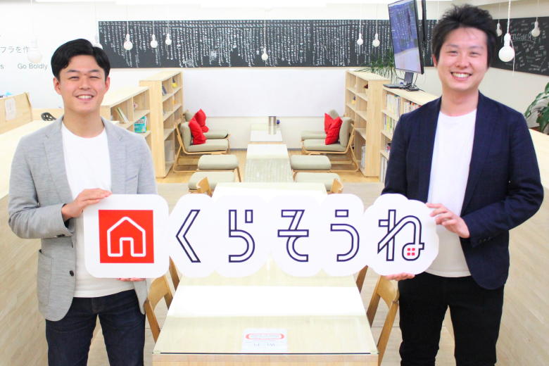
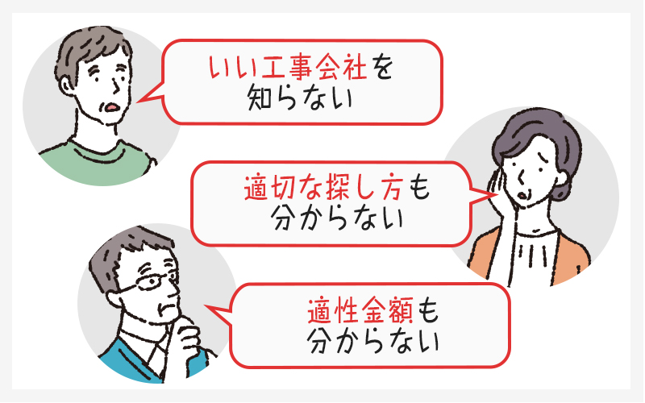

大手ハウスメーカーで最優秀営業賞をもらって見えたもの

この度は、弊社空家解体マッチングサービス『くらそうね』をご利用いただきありがとうございます。
くらそうねを運営する会社、『クラッソーネ』の代表取締役、川口哲平と申します。
今日は私がなぜくらそうねサービスを始めようと思ったのか、何を目標にしているのか、少しだけお話ししてみたいと思います。
2005年にセキスイハイム中部に入社し、セキスイハイムグループ3,000人の中で最優秀営業賞を受賞。
全国でトップクラスの営業マンとして多くの皆さんの住まいづくりに携わってきました。
そして建て替えを希望するお客様と接する中で、「ハウスメーカーを介さず工事会社に直接依頼してコストを下げたい」という声を非常に多く聞きました。
さらに、「両親から引き継いだ空き家を持て余している」という方も非常に多く、しかもそれは全国的に年々すごい勢いで増えていっているというデータも出ていました。
その皆さんが一様におっしゃるのは、

新しいお住まいを次々にご提案する毎日の中で、次第に「古い建物を解体しなければ新しい建物は建たない」という思いが強くなりました。
人口減少の時代を迎えていく今、日本の建設業界を元気にする第一歩として、エンドユーザーの皆さんにも、解体工事会社の皆さんにも喜んでいただける新しいサービスを作ってみたいと思うようになりました。
『誰もやらないこと』を黙々とこなす真面目な人たちにスポットを
このまま荒れ果てた空き家だらけになってしまう日本を救う、くらいの気持ちで解体業界の革新を目指した私ですが、日本の解体業界には問題が山積していました。
-
「優良工事会社」の事前判断が難しい
-
多重下請け構造による多重マージンの発生
-
深刻な職人不足
-
一部の悪質業者によるイメージの悪さ
-
アナログ体質が強く残る解体業界
会社設立当初は困難の連続でしたが、これらをすべて解決できる方法として、解体マッチングサービス『くらそうね』を完成させることができました。
住宅業界に長く身を置いていると、実際の解体工事会社は「自分たちが業界のイメージを良くしていきたい」と言っている素朴なおじさんがほとんどであることが分かります。
キツイ仕事である解体業を黙々とこなしてくれている、建設業界にとってなくてはならない大切な存在です。
でもその皆さんはご自身の想いをエンドユーザーに伝える効率的な手段を持っていない。そしてエンドユーザーの皆さんもそういう工事会社さんを見つける確実な手段を持っていない。
その両者を結びつけてあげることで、業界全体が抱えるその他の問題にも光明が見えてくると考えています。
日本の住環境の未来を決めるのは空き家問題
私たちが様々な試行錯誤の末に作り上げてきた『くらそうね』はエンドユーザーの皆さんも解体工事会社の皆さんも、ともに高い満足度を感じてもらうためのサービスです。
無駄な多重マージンをカットして、解体工事会社の利益率だけを上げる。
優良な工事会社に正当な利益が出れば、職人を目指す若者も増えて職人不足の解消にも繋がります。
これから人口減少が加速して空き家率はどんどん高まり、解体工事のニーズは住宅着工数とは反比例して増えていく見込みです。
ニーズはあるのに業界がアナログ体質すぎて良さが伝わらずにいた問題を、『くらそうね』というITが大きく変えていく。
空き家の解体工事は新しい未来を作るための第一歩と考え、さらなる利便性と変革を求めて、『くらそうね』は登録工事会社さんと共にもっともっと進化していくサービスでありたいと思っています。

工事会社からの営業電話やメールは一切しないので、
安心してお見積もり入力してください。